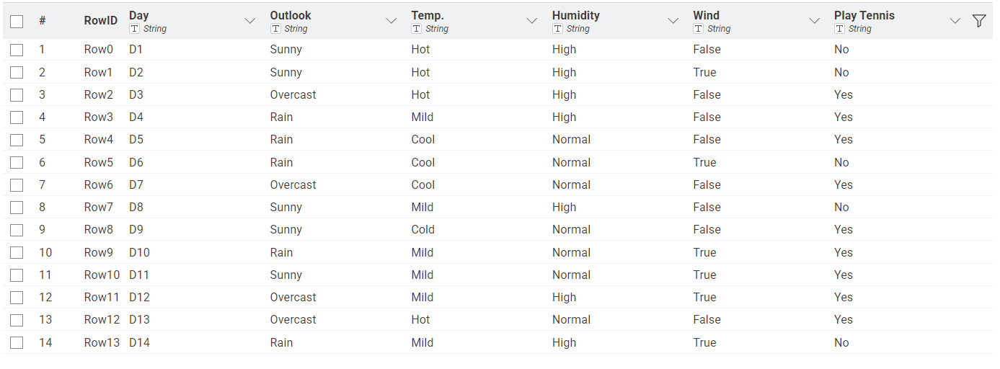
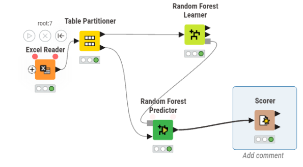
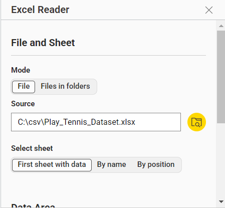
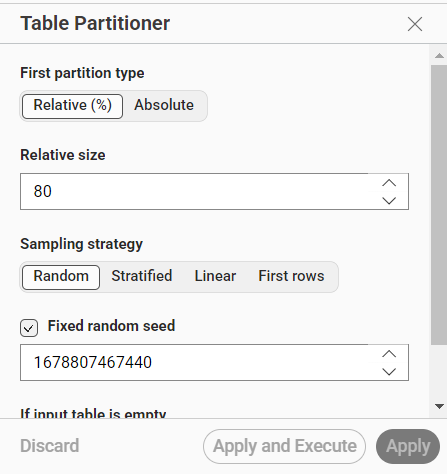
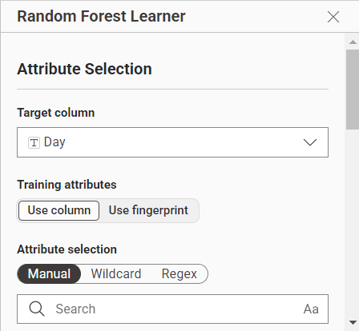
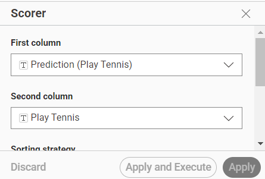
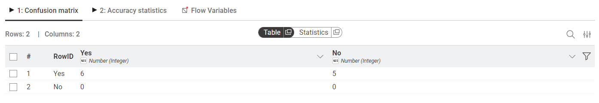
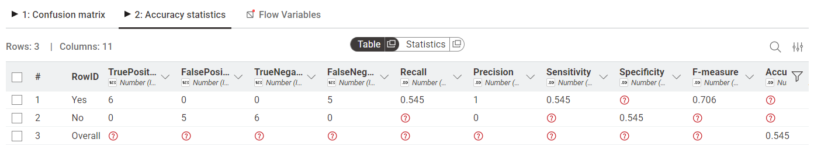

Laporan Proyek#
Implementasi Random Forest Menggunakan Dataset PlayTennis di KNIME#
1. Pendahuluan#
Pada praktikum ini dilakukan implementasi algoritma Random Forest menggunakan aplikasi KNIME menggunakan dataset PlayTennis. Workflow dibangun secara visual menggunakan beberapa node utama seperti Excel Reader, Table Partitioner, Random Forest Learner, Random Forest Predictor, dan Scorer. Tujuan utama praktikum ini adalah membangun model klasifikasi untuk menentukan apakah permainan tenis dapat dilakukan atau tidak berdasarkan kondisi cuaca. Selain itu dilakukan juga analisis hasil confusion matrix serta perbandingan dengan algoritma Decision Tree yang sebelumnya telah digunakan.
2. Dataset PlayTennis#
Dataset PlayTennis merupakan dataset klasifikasi sederhana yang berisi data kondisi cuaca dan keputusan bermain tenis.
Dataset memiliki atribut:
Outlook
Temperature
Humidity
Wind
Target klasifikasi:
PlayTennis (Yes / No)
Contoh data:
Sunny, Hot, High, Weak → No
Rain, Mild, Normal, Weak → Yes
Dataset ini termasuk dataset kategorikal karena sebagian besar atribut berbentuk kategori teks.

3. Workflow Random Forest di KNIME#
Workflow yang digunakan terdiri dari beberapa node utama:
Excel Reader
Table Partitioner
Random Forest Learner
Random Forest Predictor
Scorer
Alur workflow:
membaca dataset
membagi data training dan testing
membangun model Random Forest
melakukan prediksi
mengevaluasi hasil klasifikasi
Workflow ini menggunakan pendekatan visual sehingga seluruh proses machine learning dapat dilakukan tanpa coding manual.

4. Penjelasan Tiap Node#
4.1 Excel Reader#
Node Excel Reader digunakan untuk membaca dataset PlayTennis dari file Excel. Dataset yang berhasil dibaca kemudian diubah menjadi tabel KNIME agar dapat diproses pada node berikutnya.

4.2 Table Partitioner#
Node Table Partitioner digunakan untuk membagi dataset menjadi data training dan data testing. Pada workflow ini data dibagi secara random untuk melatih dan menguji model Random Forest. Data training digunakan untuk membangun model, sedangkan data testing digunakan untuk mengevaluasi performa model.

4.3 Random Forest Learner#
Node Random Forest Learner digunakan untuk membangun model klasifikasi Random Forest. Random Forest bekerja dengan membentuk banyak decision tree secara otomatis dari data training. Setiap tree akan menghasilkan prediksi masing-masing, kemudian hasil akhir ditentukan menggunakan voting mayoritas.
Karena menggunakan banyak tree, Random Forest biasanya:
lebih stabil
lebih tahan overfitting
memiliki generalisasi yang lebih baik
dibandingkan Decision Tree biasa.

4.4 Random Forest Predictor#
Node Random Forest Predictor digunakan untuk melakukan prediksi terhadap data testing menggunakan model yang telah dibuat sebelumnya.
Output node ini menghasilkan:
label asli
hasil prediksi model
Dari hasil tersebut dapat diketahui apakah prediksi model benar atau salah.

4.5 Scorer#
Node Scorer digunakan untuk mengevaluasi performa model klasifikasi.
Scorer menghasilkan:
confusion matrix
accuracy statistics
Confusion matrix digunakan untuk melihat jumlah prediksi benar dan salah dari model.

5. Hasil Confusion Matrix#
Berikut hasil confusion matrix dari workflow Random Forest:
Aktual |
Prediksi Yes |
Prediksi No |
|---|---|---|
Yes |
1 |
1 |
No |
0 |
0 |
Interpretasi hasil:
terdapat 1 data Yes yang berhasil diprediksi dengan benar
terdapat 1 data Yes yang salah diprediksi menjadi No
tidak terdapat data kelas No pada data testing
Hal ini menunjukkan bahwa data testing yang digunakan sangat sedikit dan distribusi kelas belum seimbang. Akibatnya evaluasi model belum sepenuhnya merepresentasikan kemampuan klasifikasi Random Forest.

6. Perhitungan Accuracy#
Accuracy digunakan untuk mengukur tingkat ketepatan prediksi model. Rumus accuracy:
Accuracy = jumlah prediksi benar / total data testing
Perhitungan berdasarkan confusion matrix:
prediksi benar = 1
total data testing = 2
Maka: Accuracy = 1 / 2 = 0.5 = 50% Model menghasilkan accuracy sebesar 50%.
Nilai accuracy tersebut dipengaruhi oleh:
jumlah dataset yang kecil
data testing yang tidak seimbang
distribusi kelas yang kurang merata

7. Analisis Hasil#
Hasil implementasi menunjukkan bahwa model Random Forest berhasil dijalankan dengan baik pada workflow KNIME. Namun accuracy model masih rendah yaitu sebesar 50%. Beberapa penyebabnya:
7.1 Dataset Sangat Kecil#
Dataset PlayTennis hanya memiliki sekitar 14 data sehingga model belum memperoleh cukup data untuk mempelajari pola secara optimal.
7.2 Data Testing Tidak Seimbang#
Pada confusion matrix terlihat bahwa data testing hanya berisi kelas Yes. Akibatnya model tidak diuji terhadap kelas No sehingga evaluasi model belum maksimal.
7.3 Pembagian Data Secara Random#
Karena pembagian dilakukan secara random, kemungkinan distribusi data training dan testing tidak merata. Hal ini dapat mempengaruhi performa model.
7.4 Random Forest Lebih Cocok untuk Dataset Besar#
Random Forest sebenarnya lebih efektif digunakan pada dataset besar karena bekerja menggunakan banyak decision tree. Pada dataset kecil seperti PlayTennis, peningkatan performa dibanding Decision Tree belum terlalu terlihat.
8. Perbandingan dengan Decision Tree#
Sebelumnya dilakukan implementasi menggunakan algoritma Decision Tree. Perbedaan utama kedua metode:
Decision Tree |
Random Forest |
|---|---|
Menggunakan satu tree |
Menggunakan banyak tree |
Lebih sederhana |
Lebih kompleks |
Mudah dipahami |
Lebih sulit dianalisis |
Rentan overfitting |
Lebih tahan overfitting |
Cepat diproses |
Lebih lambat |
Decision Tree bekerja dengan membentuk satu pohon keputusan berdasarkan atribut terbaik. Sedangkan Random Forest membentuk banyak decision tree lalu menggabungkan seluruh hasil prediksi menggunakan voting mayoritas. Pada dataset kecil seperti PlayTennis, performa kedua metode belum memiliki perbedaan signifikan karena jumlah data sangat sedikit.
9. Kesimpulan#
Implementasi Random Forest menggunakan KNIME berhasil dilakukan dengan baik menggunakan workflow berbasis visual.
Workflow terdiri dari:
Excel Reader
Table Partitioner
Random Forest Learner
Random Forest Predictor
Scorer
Model berhasil melakukan proses training, prediksi, dan evaluasi. Berdasarkan confusion matrix diperoleh accuracy sebesar 50%. Nilai accuracy dipengaruhi oleh ukuran dataset yang kecil serta distribusi data testing yang tidak seimbang. Dibandingkan Decision Tree, Random Forest memiliki struktur yang lebih kompleks dan lebih cocok digunakan pada dataset besar karena mampu mengurangi overfitting dan meningkatkan stabilitas model.